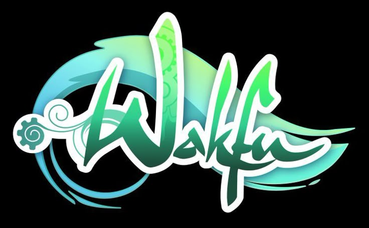

La historia del despertar del Wakfu
Wakfu es una serie animada francesa creada por Ankama, basada en el universo del videojuego Dofus. La historia se desarrolla en el Mundo de los Doce, un universo mágico lleno de criaturas, héroes y civilizaciones diversas, donde la energía vital conocida como Wakfu mantiene el equilibrio entre todas las cosas.
La serie sigue las aventuras de Yugo, un joven Eliatrope con la capacidad de crear portales que conectan distintos lugares instantáneamente. Desde muy pequeño, Yugo busca descubrir sus orígenes, ya que es huérfano y posee un poder excepcional que lo hace único. Durante su viaje, conoce a un grupo de amigos que se convierten en su familia y compañeros de aventura.
A lo largo de la serie, Yugo y sus amigos se enfrentan a numerosos enemigos y desafíos, desde malvados que buscan controlar el Wakfu hasta criaturas mágicas que amenazan la paz del mundo. Cada aventura permite descubrir más sobre la historia, la magia y las leyendas de este universo.
Uno de los elementos centrales de Wakfu es la energía mágica llamada Wakfu, que fluye a través de todo el mundo. Los personajes deben aprender a respetarla y protegerla, ya que un desequilibrio puede causar desastres naturales o conflictos entre razas. La serie combina magia, acción, humor y valores como la amistad, la lealtad y el sacrificio, creando un mundo rico en narrativa y estética visual.
Además, Wakfu profundiza en la diversidad de razas y culturas, mostrando sus tradiciones, fortalezas y debilidades. Por ejemplo, los Eliatropes son exploradores y guardianes del equilibrio; los Iops, guerreros valientes; los Sadidas, protectores de la naturaleza; y los Enutrofs, expertos en encontrar tesoros y secretos del pasado.
La historia de Wakfu también toca temas emocionales y filosóficos, como la búsqueda de identidad, el valor de la familia y la responsabilidad que conlleva tener poderes extraordinarios. Cada arco de la serie combina aventuras épicas con lecciones de vida, haciendo que tanto jóvenes como adultos disfruten de su narrativa.